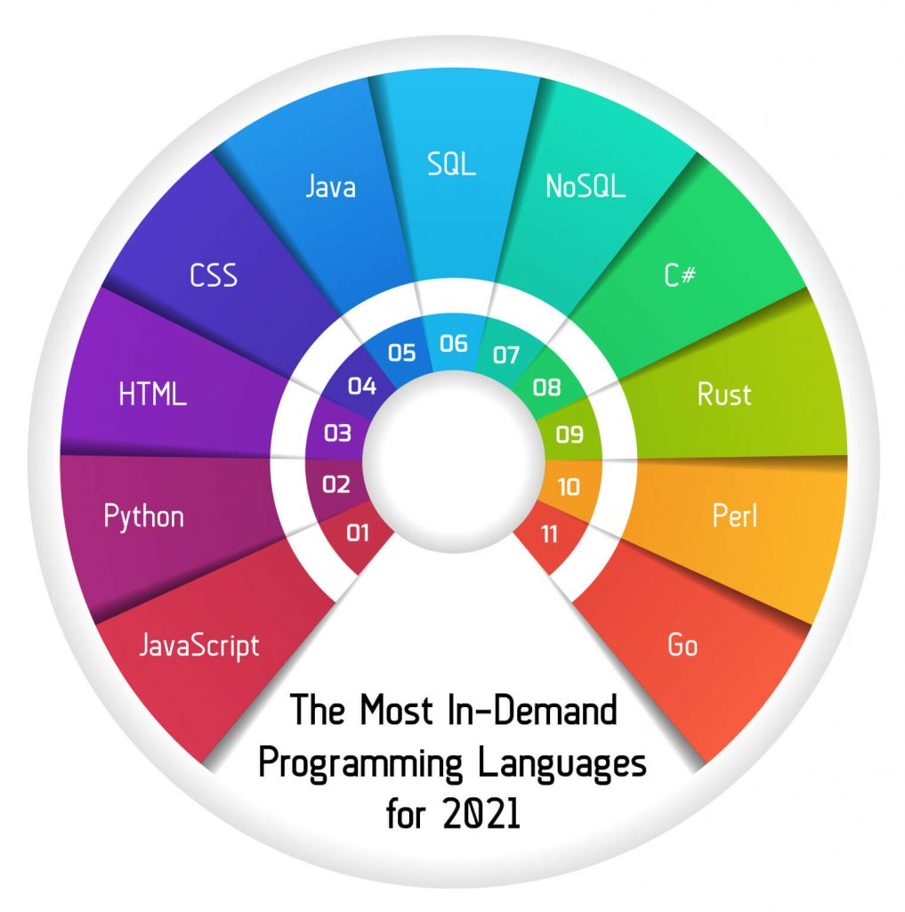
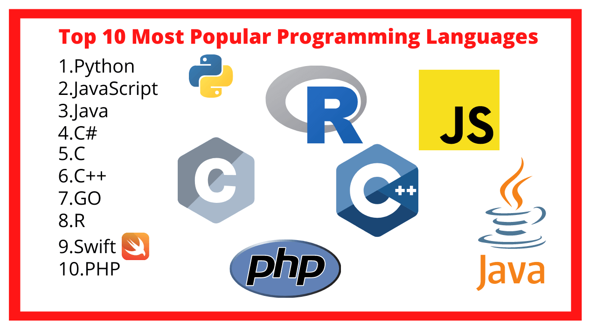

Top 10 Programmig Language in 2021

There’s no question that software programming is a hot career right now. The U.S. Bureau of Labor Statistics projects a 21 percent growth for programming jobs from 2018 to 2028, which is more than four times the average for all occupations.
Whether you’re new to programming or looking to brush up on your skills, it helps to know which languages are in high demand. Here are 10 of the most popular programming languages of 2020 based on the number of job postings listed on the job search site Indeed, the average annual salary for those jobs, and factors such as ease of use and potential for growth.Because these 10 most popular programming languages will give you a job.
